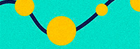
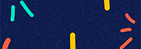

Une communication qui limite ses impacts négatifs sur la société, l’environnement et ses occupants. Ok… Et ça veut dire quoi ?
C’est le respect de la personne humaine, des différences, des minorités, des individualités.
C’est veiller à l’accessibilité des messages et des supports.
C’est réduire les effets néfastes de la conception et de la production des actions de communication sur l’environnement.
Et plus encore, la communication responsable vise à faire évoluer les prises de parole et ce qui les motive ! Communiquer pour créer de nouveaux imaginaires et parfois même pour contribuer à la résolution de challenges de société…
Le challenge :
Le challenge :
Le challenge :